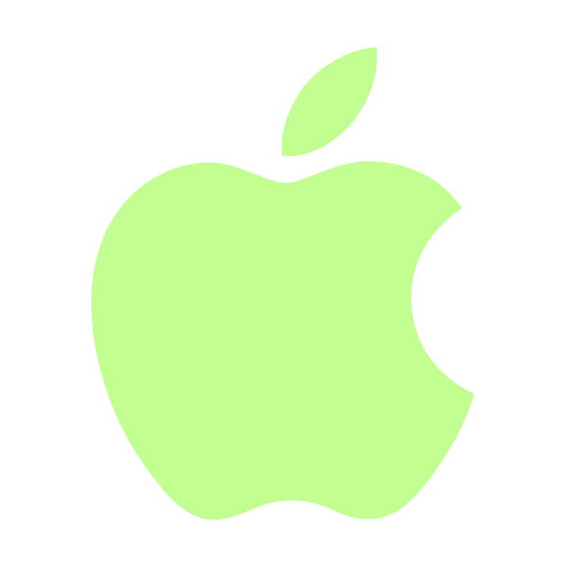
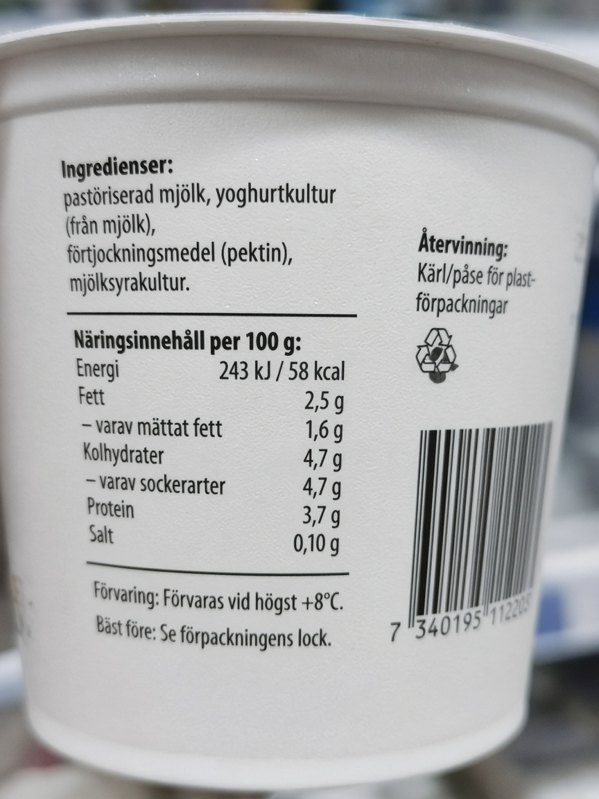
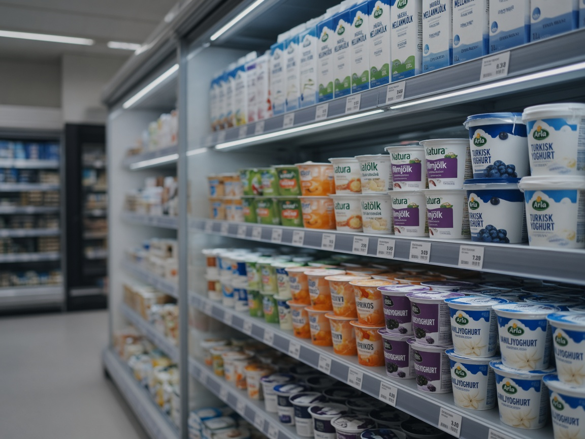
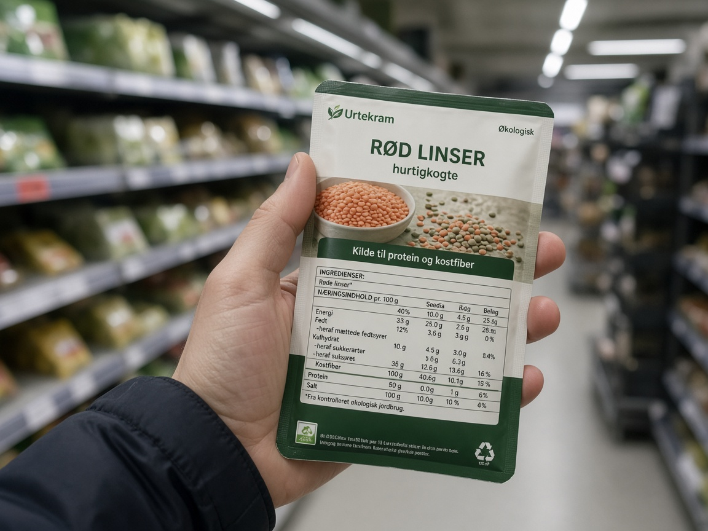
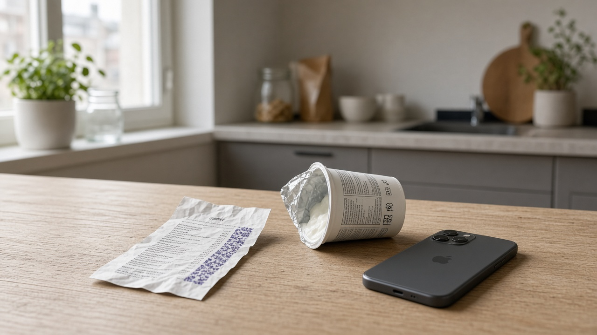
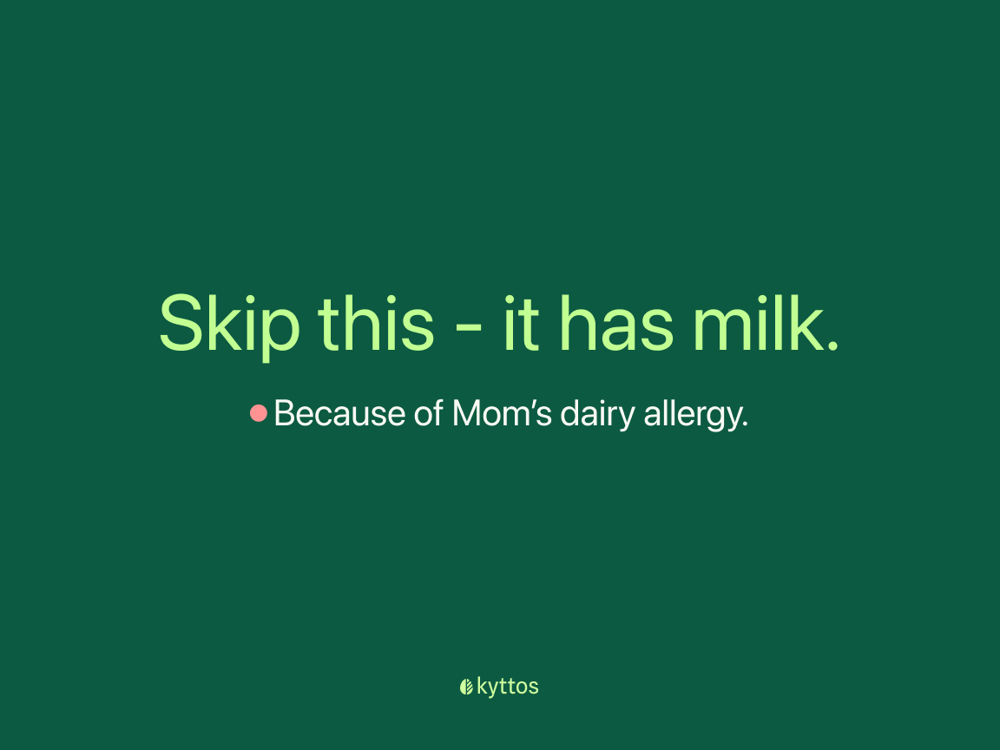

Kyttos A shopping companion iPhone
You already know how to shop. The pack is the hard part.
Before it goes in the basket.
Point Kyttos at the ingredient list. In a few seconds it tells you — in one sentence — whether this product works for you, your child, or whoever you’re standing there buying for.
Not a health score. Not a lecture. The thing you needed under the fluorescent lights.

App StoreAvailable on iPhone.

Point at the list
Reading…
Reading the label…
- Pasteurised milkDirect dairy
- Yoghurt cultureFrom milk · fermented
- Lactic culturesWorth knowing
- PectinQuiet
Try it like a household
Same yoghurt. Three people at home.
The pack does not change. The sentence should. Tap who you’re shopping for — the way you would in the aisle, with one thumb.
You’re shopping for Leo. Dairy is a hard stop.

The moment
Fluorescent lights. Tiny print. Someone at home who can’t have milk.
You turn the pot around. The type is smaller than your patience. Google will give you fourteen tabs and still not know that you’re shopping for Leo.

Why this exists
Generic apps rate the product. You don’t buy products for a generic person.
Database apps look up a barcode and paint it green or red for “people.” Kyttos reads the list in your hand, against the household you actually have — conditions, allergies, a pregnancy, a child who cannot guess.
If you have histamine intolerance, you already know the allergen box never mentioned you. If you shop for two different people in the same trip, you already know a single “healthy” rating is useless.
This is the missing sentence. Then you put it in the basket, or you don’t.
On the pack, so to speak
Built the way you’d want it after work, in the shop.
Not ten features competing for a screenshot. A few things that have to be true or the app is theatre.
- The scanner
- Open the camera. Point it at the list. If the pot is curved, the print is tired, or the label is wrecked — type it. Same analysis. The aisle is not a studio.
- One sentence, then a reason
- Skip this — it has milk. Because of his dairy allergy. No score, no percentage, no wall of text while someone queues behind you. Pull up only if you want the full list.
- A household, not a user
- Separate profiles under one account. Yourself, a child, a partner, a parent. Switch from the scanner with one tap. Every scan belongs to whoever was active — so you don’t “save” a yoghurt as safe and later feed it to the wrong person.
- Histamine, named
- Not buried in a generic condition chip. Direct sources, liberators, DAO blockers, and the processing that never makes the ingredients line — aged, cured, smoked, pickled. You set how loud it gets. The allergen box never did this for you. A barcode database can’t.
- Pregnant, on purpose
- A life-stage toggle, not a condition to apologise for. It watches for the usual label-visible cautions — alcohol, caffeine, unpasteurised dairy — and speaks like a friend. It will not diagnose, and it will not pretend a label knows how you cook fish.
- It gets more useful, not less
- Every scan is kept. Add an allergy in November and re-check what you bought in March. Safe and avoid lists are per person, for the next time you’re in a hurry. An optional weekly note: what you scanned, what was flagged, one ingredient that actually matters to you. Not a marketing ping.
Read this part
We are not here to grade your groceries.
Kyttos will not tell you that a yoghurt is “73% healthy.” It will not look up a barcode and hope the manufacturer’s database is having a good day. It will not count your calories, ping you about recalls, or turn shopping into a feed.
It reads what’s printed. It places that against the people you shop for. When the label cannot tell the whole story, it should say so — not invent a confident answer because confident answers convert.
If that sounds smaller than the usual app pitch: good. The aisle is already loud enough.
- Not a medical diagnosis
- Not a product database
- Not a nutrition tracker
- Not a social network

Take it with you
If you shop for a real household, this was overdue.
Kyttos is on the iPhone, for anyone who shops for a real household. Send a scan to the family chat if that’s how you actually decide.
Download on the App StoreiPhone.
